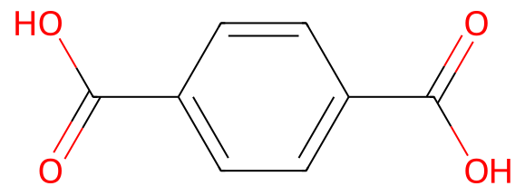
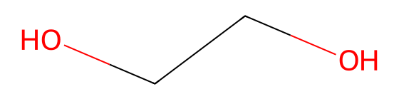

PETの分子量と重合度の計算｜繰り返し単位の式量192 化学プロセス
分子量 10 万のポリエチレンテレフタラートの重合度の範囲として、最も適切なものはどれか。ただし、各元素の原子量は C = 12、O = 16、H = 1 とする。
①
300～400
②
401～500
③
501～600
④
601～700
⑤
701～800
正答
③ 501～600
PETの重合度は「高分子の分子量÷繰り返し単位の式量」
ポリエチレンテレフタラート（PET）の繰り返し単位の式量は192です。分子量10万を192で割ると約521となるため、選択肢③の「501～600」が正答です。
1．繰り返し単位の式量192を求める
PETは、テレフタル酸とエチレングリコールから作ることができます。繰り返し単位は \(\mathrm{C_{10}H_8O_4}\) であり、問題で与えられた原子量を使うと次のように計算できます。
\[M_0=10\times12+8\times1+4\times16=192\]
原料から数える場合も同じ結果です。テレフタル酸の分子量166とエチレングリコールの分子量62を足し、繰り返し単位1つ当たりの水2分子に相当する36を引きます。
\[M_0=166+62-2\times18=192\]
2．分子量10万を192で割る
\[n\approx\frac{M}{M_0}=\frac{100{,}000}{192}=520.83\ldots\approx521\]
ここでは、長い高分子鎖に対して小さい末端基の寄与を無視して重合度の範囲を求めています。原料2分子の分子量を足した228のまま割ると、脱水によって失われる部分まで数えることになり、誤答になります。


繰り返し構造の参考資料
UCLA「Polyethylene terephthalate」に、PETの原料と繰り返し構造が示されています。